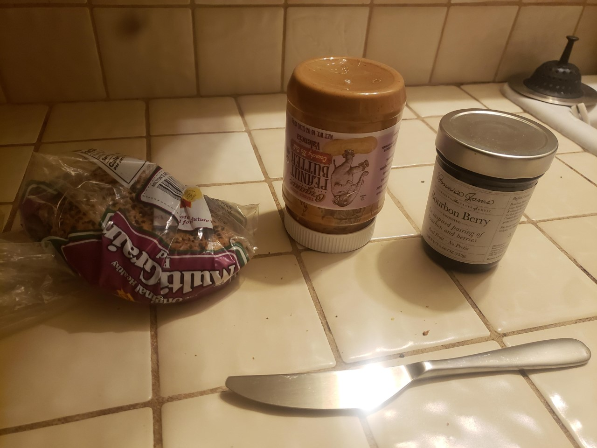
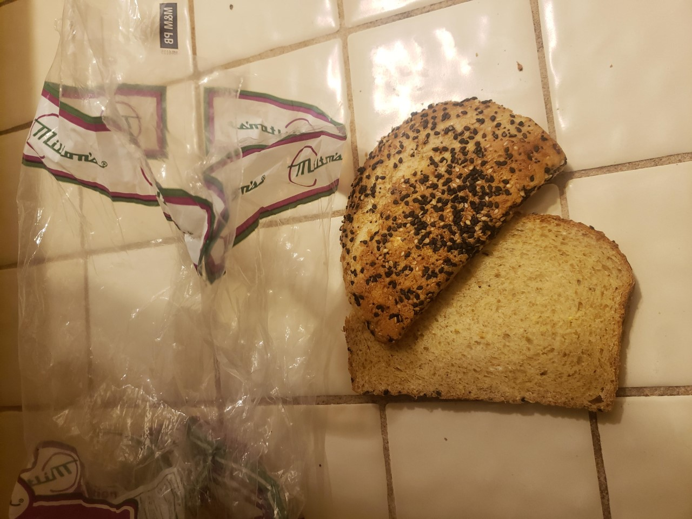
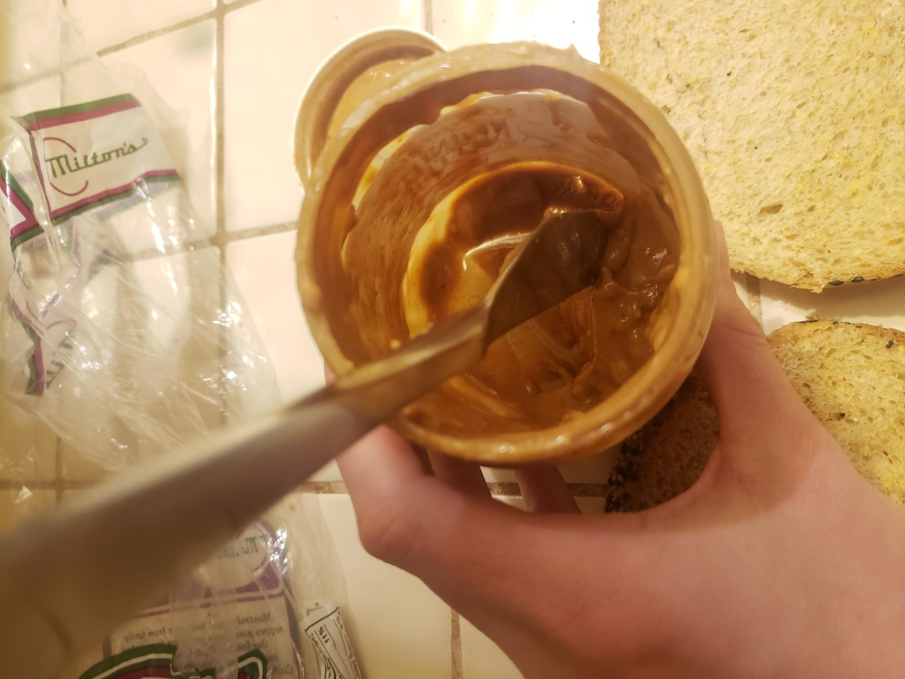
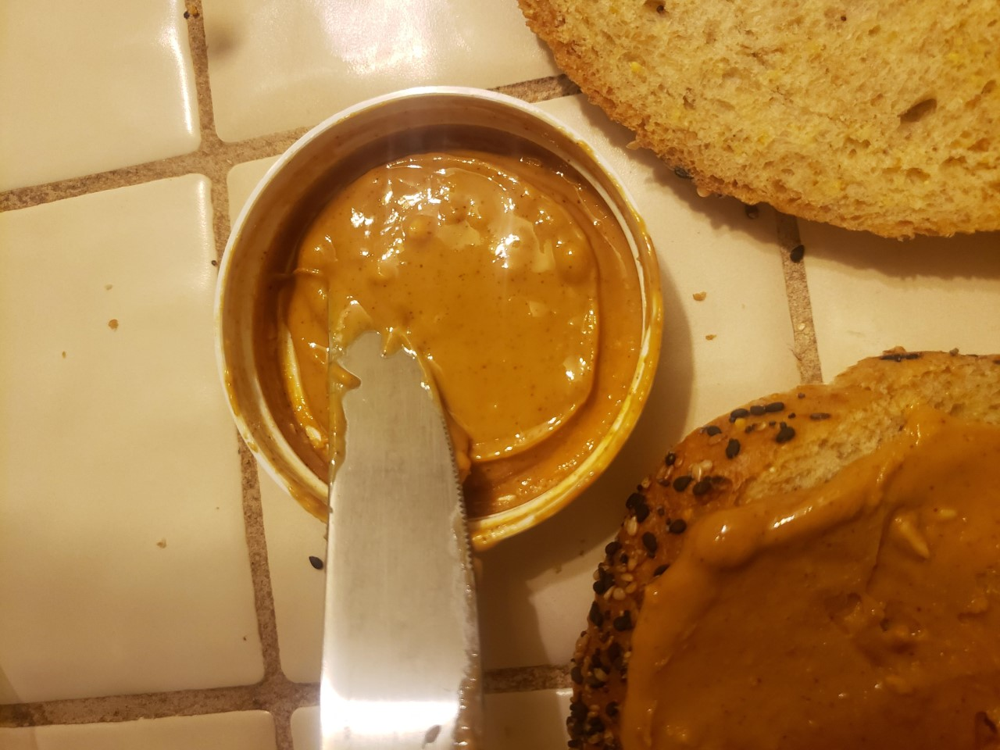
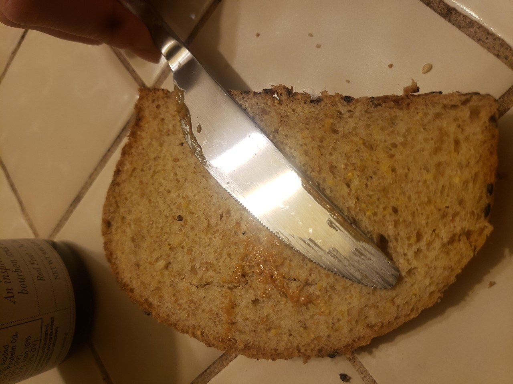
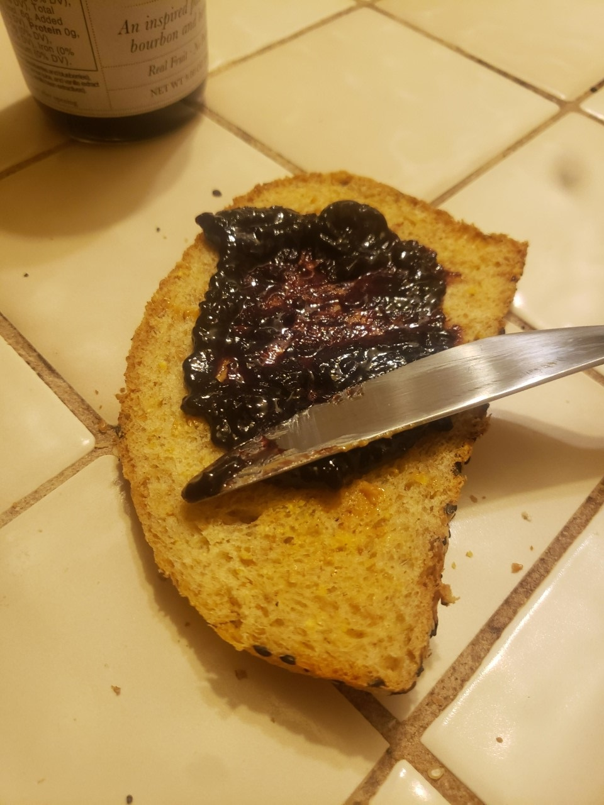
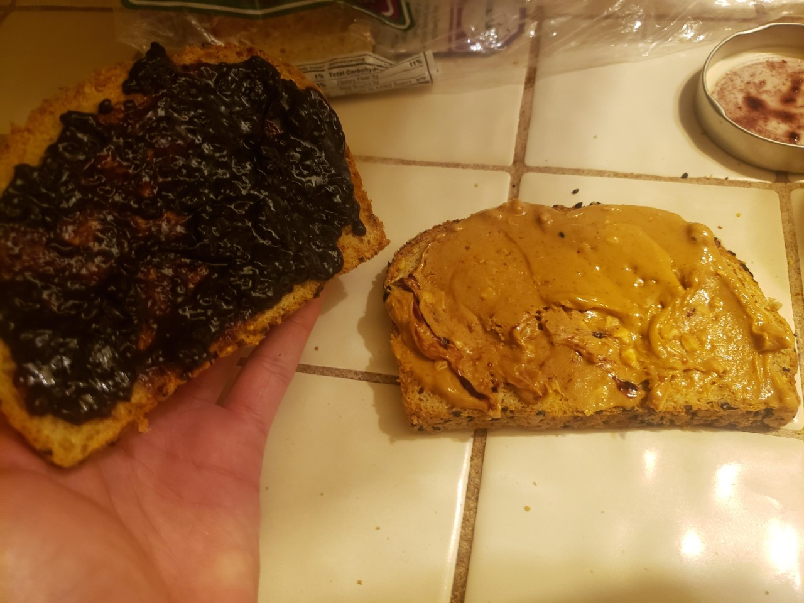
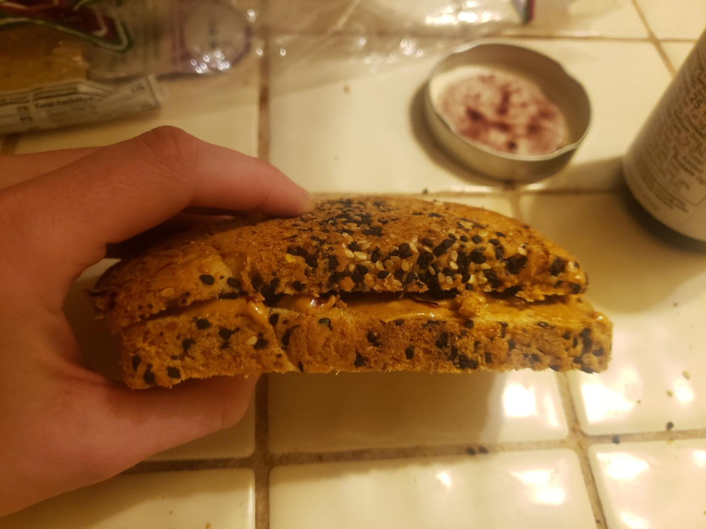
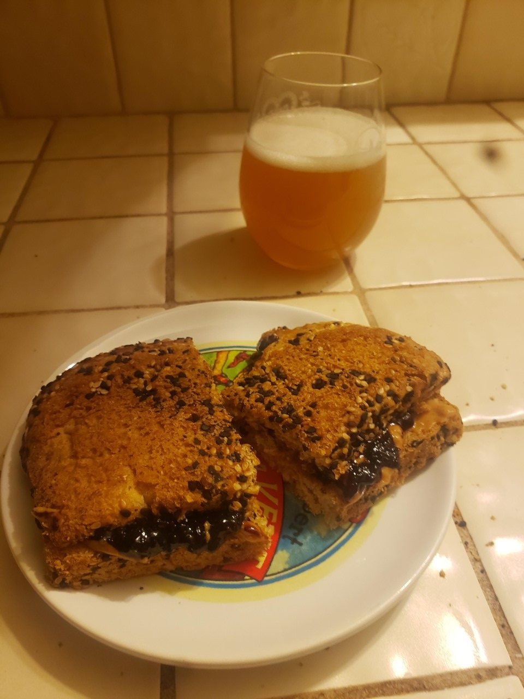

Materials:
Step One: Gather your Materials
Gather your bread, jelly, peanut butter and a knife.

Step Two: Do you have enough bread?
If you're almost out of bread, you'll have to use the heel.

Step Three: Do you have enough peanut butter?
Use the knife to get all the peanut butter from the bottom of the jar.

Step Four: Use what's on the lid if you have to.
If you thought ahead and stored your peanut butter upside down,
there will be some stuck on the lid for you to use!
Spread the peanut butter to the edges.

Step Five: Before you go to the jelly...
Wipe your knife on the clean piece of bread, you animal.

Step Six: Jelly
Spread the jam to the edges in an even thickness with the peanut butter.

Step Seven: Admire your work
Is it even? Is it to the edges?
Is there even anything left in the peanut butter jar?

Step Eight: Slap them together
You know what to do.

Step 9: Final Presentation
Cut it in half. Put it on a plate. The traditional beverage
with this sandwich is milk. Since you're out of milk and this is dinner,
you can have a beer instead.
